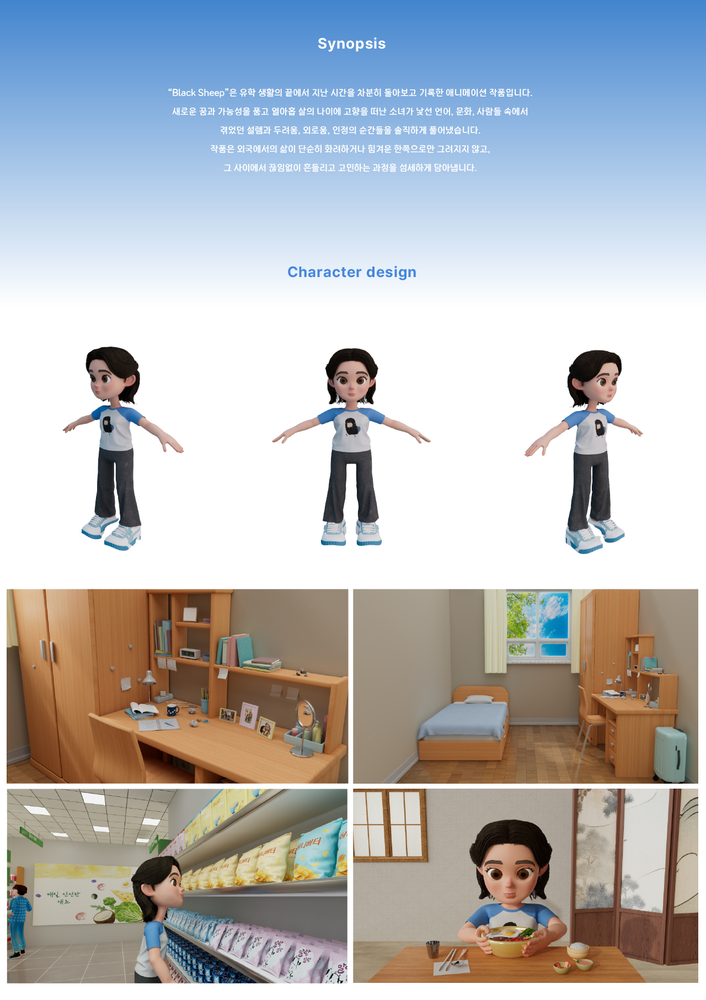
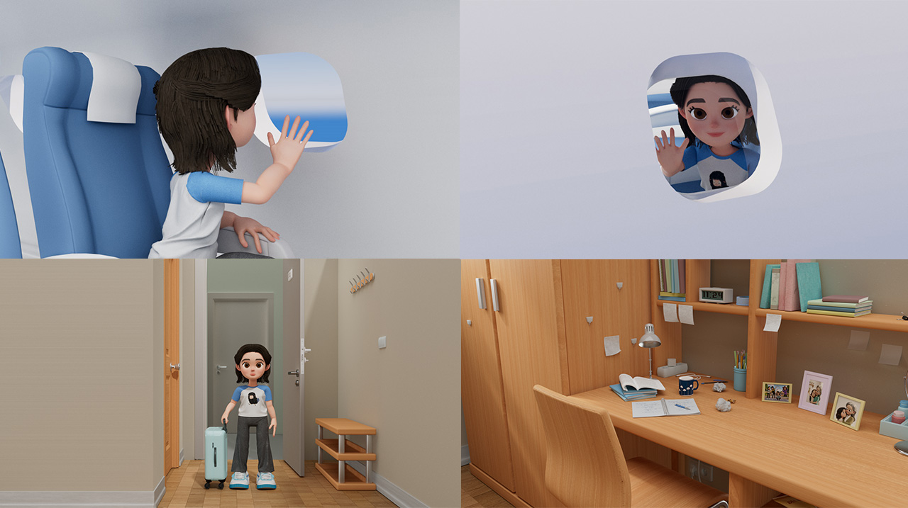
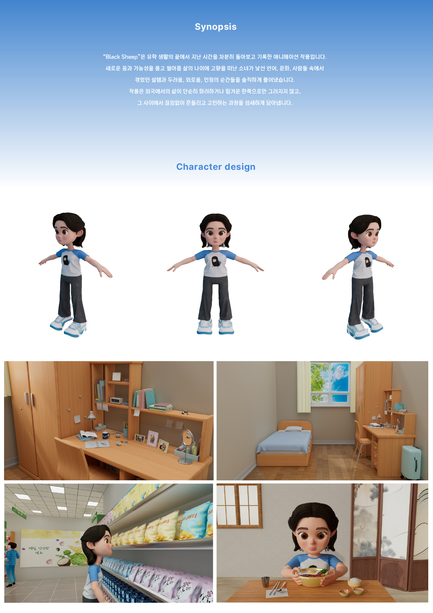
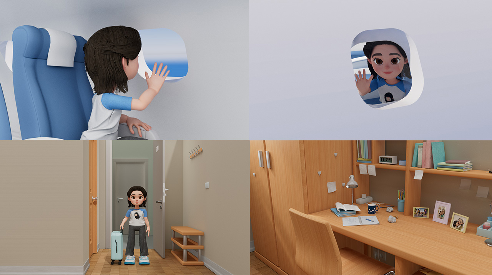

블랙 쉽
BLACK SHEEPh
엥흘렝
〈Black Sheep〉은 새로운 꿈을 안고 고향을 떠난 열아홉 살 소녀가 낯선 언어와 문화, 사람들 속에서 겪은 외로움과 다양한 감정을 솔직히 담은 애니메이션으로, 역경을 극복한 이야기가 아닌 여전히 겪고 있는 현실의 순간들을 시각적으로 보여주며 관객에게 깊은 공감과 진정성을 전합니다.

블랙 쉽
BLACK SHEEPh
엥흘렝
〈Black Sheep〉은 새로운 꿈을 안고 고향을 떠난 열아홉 살 소녀가 낯선 언어와 문화, 사람들 속에서 겪은 외로움과 다양한 감정을 솔직히 담은 애니메이션으로, 역경을 극복한 이야기가 아닌 여전히 겪고 있는 현실의 순간들을 시각적으로 보여주며 관객에게 깊은 공감과 진정성을 전합니다.
 



2025ⓒSeoul National University of Science and Technology.All Rights Reserved.